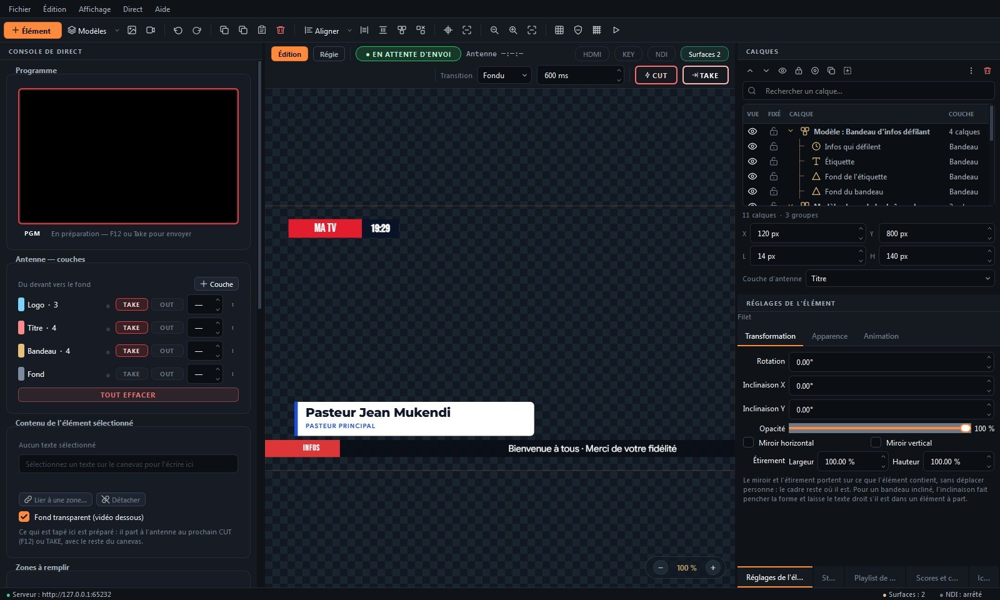
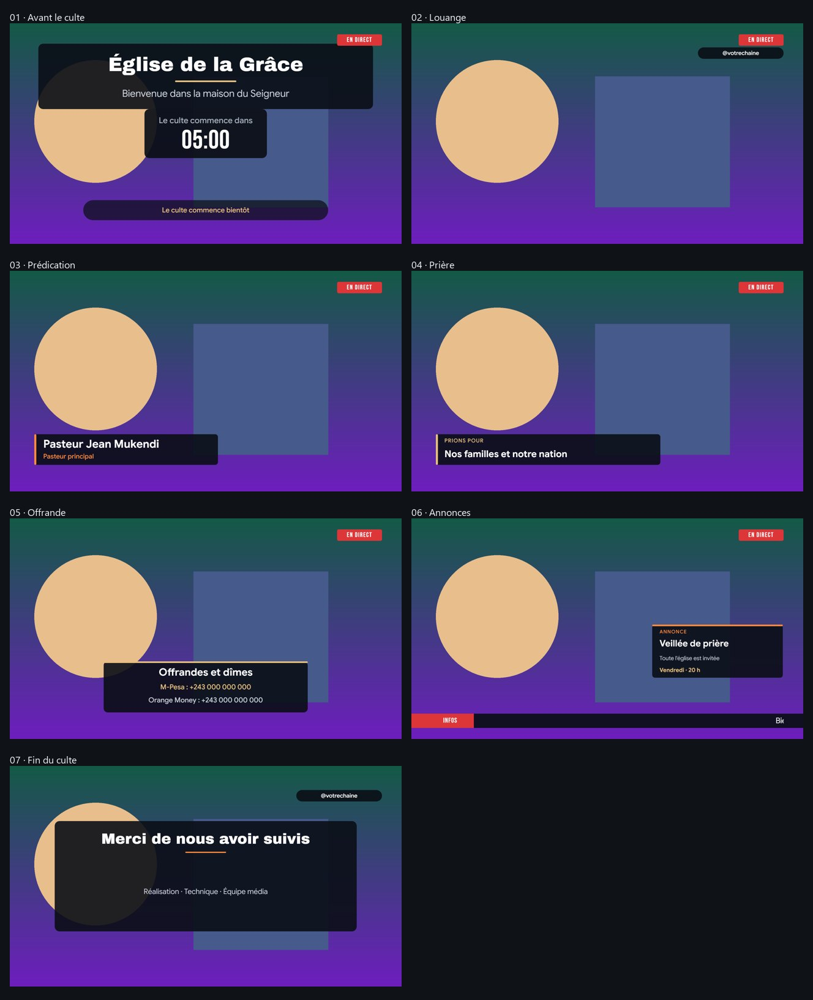
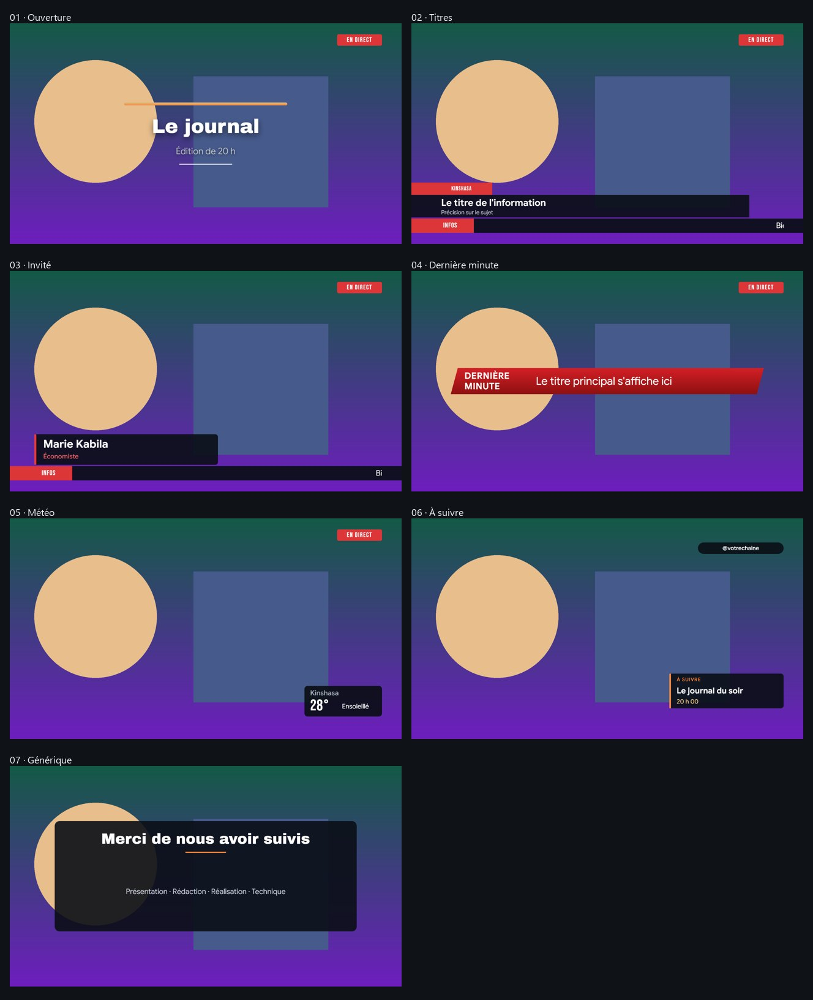
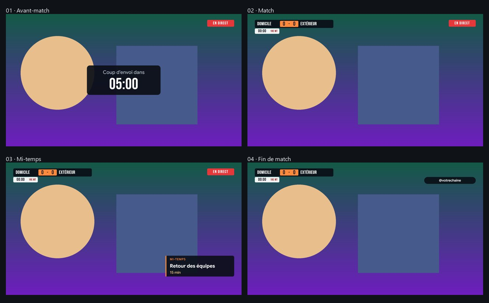
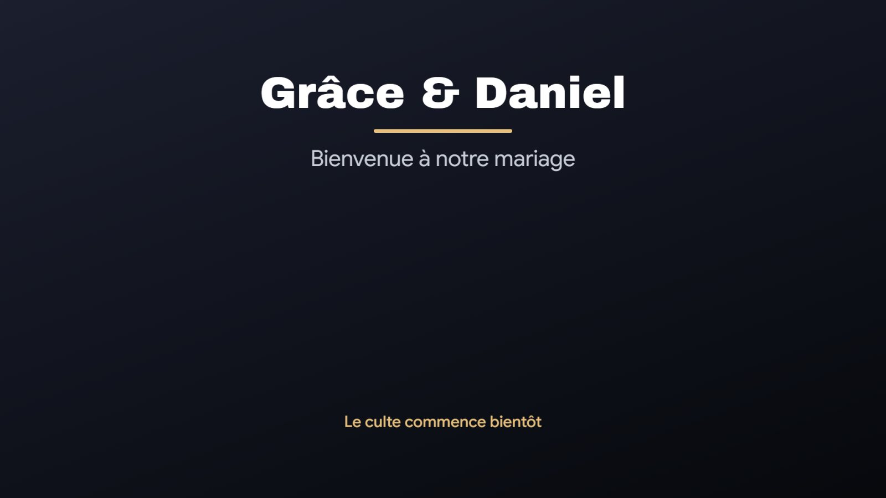
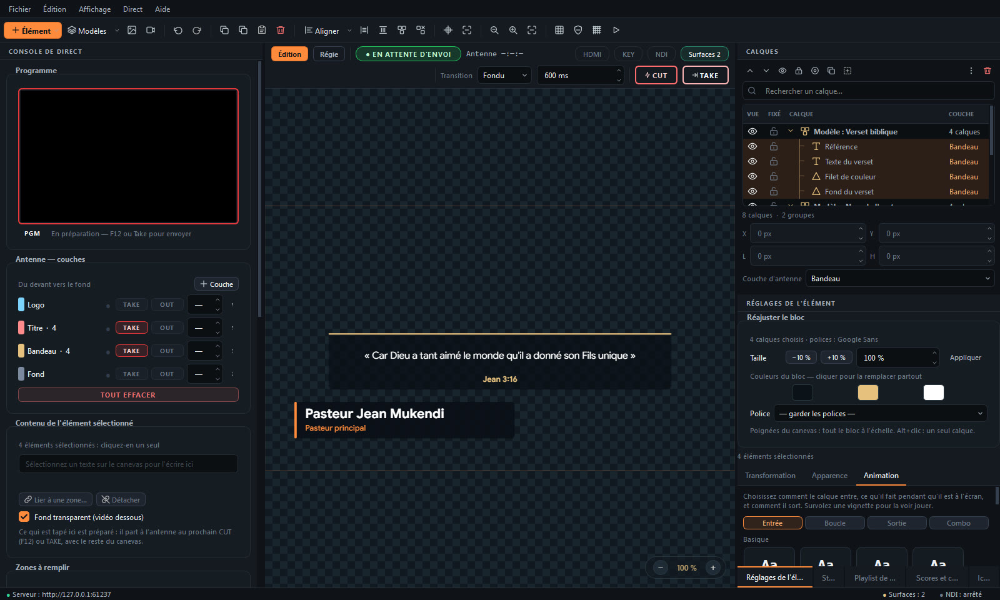
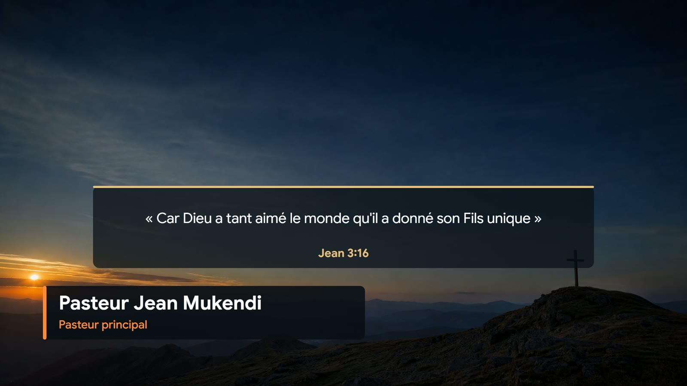
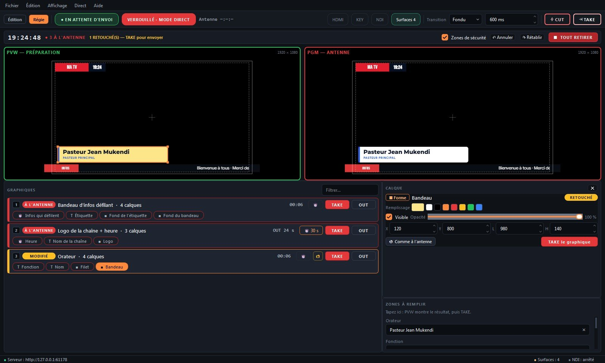

Sur la vidéo, sans fond vert
Fond transparent directement dans OBS, vMix ou tout logiciel de streaming.
Studio d'habillage graphique en direct
Bandeaux, noms, logos, scores et textes animés sur votre vidéo. Vous composez une fois, vous remplissez à la volée, et vous envoyez en direct sur toutes vos sorties en même temps.
Gratuitversion 0.14.1 · Windows 10 / 11 · toutes les fonctions

Fonctions
Pensé pour les cultes, les conférences, le journal et le sport, et pour des bénévoles qui ont peu de temps pour apprendre.
Fond transparent directement dans OBS, vMix ou tout logiciel de streaming.
HDMI plein écran (avec sortie clé pour mélangeur), page web sur un autre PC et NDI direct.
Église en cinq styles, journal, banque et entreprise, événements et sport. Tous suivent le même système de design : zone de sécurité EBU, contraste lisible sur n'importe quelle vidéo, animations courtes et nettes.
Logo, titre, bandeau, fond : chaque couche entre et sort de l'antenne séparément, comme en régie télé.
Entrées et sorties, texte mot à mot, bandeaux défilants, Ken Burns, le tout sur une timeline.
Tableaux de score, chronos de match et comptes à rebours se mettent à jour en direct, sans nouveau TAKE.
Tapez un nom, ou collez une liste d'orateurs ou de titres et enchaînez-les l'un après l'autre.
En Régie, la structure est verrouillée : rien ne se supprime par erreur. Chaque calque se retouche quand même dans la préparation, puis part avec TAKE.
Reprise automatique après un plantage, et une seule archive avec toutes vos images pour changer de PC.
Modèles
Chaque scénario enchaîne tous les moments de l'événement. Ici, les graphismes sont posés sur un fond d'essai qui remplace votre vidéo.

Avant le culte, louange, prédication avec le nom du pasteur, prière, offrande avec les numéros Mobile Money, annonces, fin. Les versets et les cantiques viennent de Project-On.

Ouverture, titres avec bandeau défilant, invité, dernière minute, météo, à suivre, générique.

Compte à rebours du coup d'envoi, score et chrono en direct, mi-temps, fin de match.

Écran d'accueil, noms des mariés, programme et remerciements, dans un style élégant.
Animation
Chaque élément a son entrée, sa boucle et sa sortie. La timeline montre tout d'un coup d'œil, et vous rejouez l'animation avant de l'envoyer à l'antenne.

Sortie
Pgraphics n'envoie que les graphismes, avec la transparence. Dans OBS ou vMix, ils se posent sur votre caméra, nets et propres.

Page Régie
Comme en régie télé : à gauche ce que vous préparez (PVW), à droite ce qui est à l'antenne (PGM). Chaque graphique a son TAKE et son OUT.

Caractéristiques
FAQ
Non. Pgraphics peut sortir directement sur un écran en HDMI ou envoyer du NDI. OBS et vMix sont simplement pris en charge si vous les utilisez.
Oui : toutes les fonctions, sans limite de durée, sans clé et sans filigrane. Ce site est financé par la publicité.
Oui, entièrement. Internet ne sert qu'à vérifier les mises à jour.
Cliquez sur « Informations complémentaires » puis « Exécuter quand même ». C'est normal pour un logiciel d'un jeune éditeur.
Depuis la version 0.13, les versets, citations et paroles de chant sont laissés au logiciel fait pour ça, comme Project-On (gratuit), qui les envoie dans votre mélangeur à côté de Pgraphics.
Oui. Project-On s'occupe des textes (Bible, cantiques), Pgraphics des noms, logos et bandeaux ; les deux arrivent dans votre mélangeur.
Pgraphics ajoute les noms et les logos, Project-On affiche la Bible et les cantiques. Les deux sont gratuits.